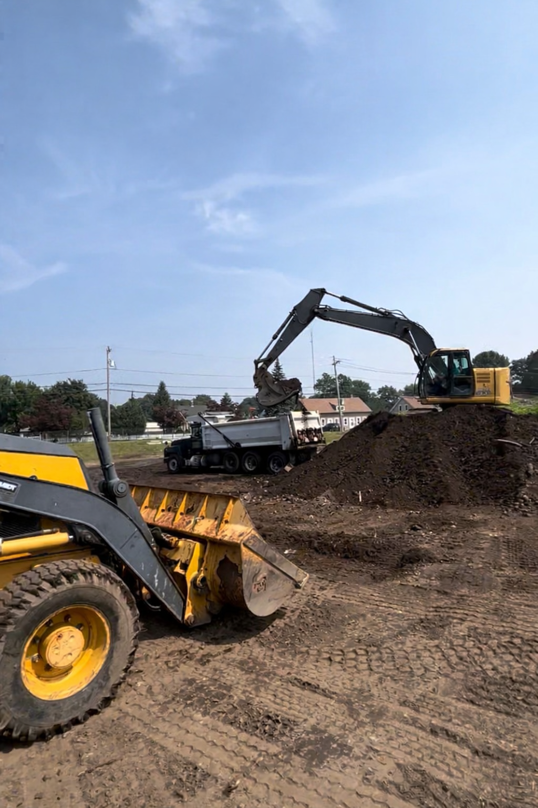

Excavation
Ground-Level Work Done Right
From leveling a sloped yard to clearing land for a new project, our excavation services handle the heavy work with precision. We prepare your site correctly from the start so everything built on top lasts.
Regrading
We reshape existing grades to correct drainage issues, level uneven ground, and prepare your yard for new landscaping or construction.
Finish Grading
Precise final grading to achieve smooth, even surfaces ready for seeding, sodding, paving, or other finishing work.
Rough Grading
Initial bulk grading to establish the overall slope and elevation of a site before finish work begins.
Trenching
Precise trenching for utilities, drainage lines, irrigation systems, and other underground installations.
Land Clearing
Removal of brush, overgrowth, stumps, and debris to prepare raw land for construction or landscaping projects.
Drainage Solutions
We assess and resolve drainage problems with grading corrections, French drains, and other site-specific solutions to keep water moving away from your property.

Have a site that needs expert ground work?
Get a Free Estimate